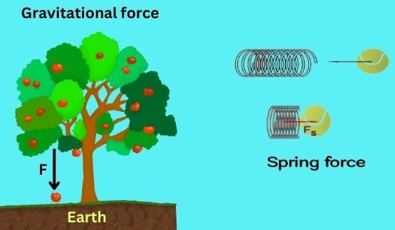

Day 13 - Conservative Forces#

Announcements#
HW 4 is due next Monday, Feb 17th NOT on Friday the 14th
There are no office hours on Feb 13th
Midterm 1 will be available on Monday as well.
DC Office Hours on Friday [in person] (10am-12pm and 3pm-4pm)
Reminder of our Midterm Procedures#
The take-home midterms will be open for almost two weeks; you can often start some exercises early as they cover older material.
They are meant to be challenging, but we will provide you with the resources and support you need to complete them.
There is no homework due during the period in which the midterm is assigned.
In contrast to homework assignments, you must turn in your own solutions to the midterms.
You may work closely together with me, Elisha, and your classmates, but you must write up your own solutions.
Seminars this week#
WEDNESDAY, February 12, 2025#
Astronomy Seminar, 1:30 pm, 1400 BPS, Rafael Luque, Univ. of Chicago, Exoplanets
FRIB Nuclear Science Seminar, 3:30pm., FRIB 1300 Auditorium, Professor Veronica Dexheimer, Kent State University, An overview of the MUSES cyberinfrastructure and what it can do for you
FRIDAY, February 14, 2025#
IReNA Online Seminar, 2:00 pm, FRIB 2025 Nuclear Conference Room,Kelsey Lund, University of California, Berkeley, How The Gentle Winds Beckon: Nucleosynthesis in Neutron Star Merger Remnant Winds
This Week’s Goals#
Remind ourselves of the concept of energy and energy conservation
Apply the conservation of energy to a variety of systems
Develop the mathematical tools to analyze energy conservation in more complex systems
Connect our new understanding of energy conservation to our previous work on forces and motion
Reminders#
Energy is conserved in every process; our choice of system determines how we account for energy.
Closed, isolated systems are often the simplest to analyze.
A point particle is a model that allows us to ignore the internal structure of an object.
The Work-Energy Theorem is just a statement of the conservation of energy for a point particle.
Conservation of Energy#
General Principle: Energy is conserved in every process.
Isolated System: No work or heat is exchanged with the surroundings.
Point Particle: A model that allows us to ignore the internal structure of an object.
The Potential Energy Function#
Simple Harmonic Oscillator (\(F_{s} = -kx\))#
Clicker Question 13-1#
The gravitation force near the Earth’s surface is given by \(\vec{F} = -mg\hat{z}\). What is the potential energy function for this force? Choose \(+\hat{z}\) to be up.
\(U = -mgz\)
\(U = mgz\)
\(U = -mgz + U_0\)
\(U = mgz + U_0\)
None of the above
Clicker Question 13-2#
A model for a lattice chain acting on a electron is given by \(F(x) = - F_0 \sin\left(\dfrac{2\pi x}{b}\right)\). What is the potential energy function for this force?
\(U = -F_0 \cos\left(\dfrac{2\pi x}{b}\right)\)
\(U = F_0 \cos\left(\dfrac{2\pi x}{b}\right)\)
\(U = -\dfrac{F_0 b}{2\pi} \cos\left(\dfrac{2\pi x}{b}\right)\)
\(U = \dfrac{F_0 b}{2\pi} \cos\left(\dfrac{2\pi x}{b}\right)\)
None of the above
Clicker Question 13-3#
I say “Stokes’ Theorem” and you say…
HELL YEAH BROTHER
I’m not sure what that is
DEAR GOD WHY?!?!
Clicker Question 13-4#
The curl of a vector field is given by \(\nabla \times \vec{F}\). If the curl of a vector field is zero, what can we say about the vector field?
It is a conservative force
It is a non-conservative force
It is a constant force
It is a force that does no work
Clicker Question 13-5#
Which of the following fields have no divergence?
 B.
B. 
A
B
Both A and B
Neither A nor B
Clicker Question 13-5#
Which of the following fields have no curl?
B.
A
B
Both A and B
Neither A nor B
Clicker Question 13-6#
Consider a vector field with zero curl: \(\nabla \times \vec{F} = 0\). Which of the following statements is true?
The field is conservative
\(\int \nabla \times \vec{F} \cdot d\vec{A} = 0\)
\(\oint \vec{F} \cdot d\vec{r} \neq 0\)
\(\vec{F}\) is the gradient of some scalar function, e.g., \(\vec{F} = - \nabla U\)
Some combination of the above